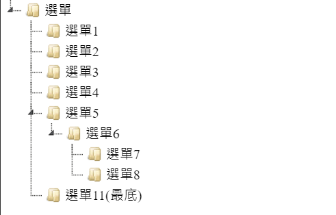
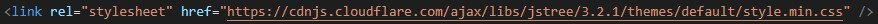
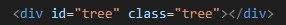
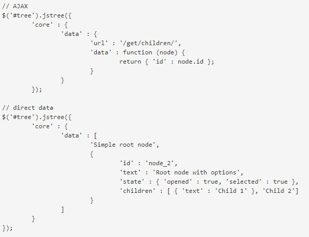
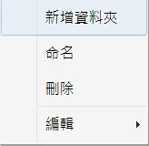
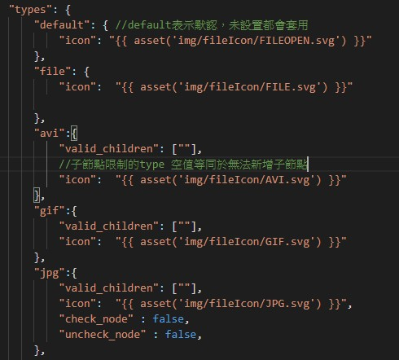

Jstree 基礎功能及操作介紹
Jstree是一個真正的王國遊戲，Jstree其實是一個樹狀的文件檔案管理的插件，又稱為樹元件。
Jstree的用途多樣，可由使用者自訂義操作內容，可選擇僅觀看，亦可選擇可查詢可操作及修改。功能性的強大讓許多人使用此插件進行開發，Jstree的基本介面大致如下:
雖然畫面看上去有些簡陋，但這些都是可以自訂義的，本身也有導入外部樣式的功能。
Jstree的會被廣泛利用當然不是只有這點，其主要原因還是交互性，Jstree搭配其提供的API使用的話，可以使用它提供的介面來操作資料進行移動、刪除、修改、新增等動動作並同步更新於後端。
那麼接下來將會解釋基本的介紹與Jstree在前端可使用的一些功能及操作。
創建步驟
首先在使用jstree前須先導入它的CSS檔案，接著則是jQuery，因為Jstree主要是依附著jQuery進行開發的，最後才是載入Jstree的js檔
CSS檔案
JS檔案
當檔案載入完成後於要使用的位置替Jstree創造個專屬id
接下來就是決定Jstree的樹結構及資料來源了，資料來源可以使用AJAX亦可以在編輯器直接輸入
這個是jstree所提供的範例檔，是最基本的jstree結構，先說data資料來源的部分，core這個屬性我們待會會提到。
我們看第二個direct直接在編輯器輸入的範例。data是一個陣列，包住許多個物件，每個物件代表一個資料夾。
第一行的字串是資料夾的名稱，也是整個選單的母資料夾，所有資料夾都是依附在它之下。
接下來我們看向第二行的物件，物件內有4個屬性。
其次是AJAX，但個人我並不是使用範例所提供的方法，而是將回傳回來的資料置入變數中，接著放入data。若是有人嘗試過使用範例的方法且願意分享的話，再麻煩與我聯絡。
自訂義功能.結構類
$.jstree.defaults.core
在基本的結構中我們可以看見core，它可以是結構的核心，資料依附它之下，同時也有一些對於tree設定的功能。接下來介紹的功能是core底下的功能。
$.jstree.defaults.core.animation 選單展開動畫
"animation": boolean or 毫秒 | 默認 true.200(毫秒) /禁用:false
$.jstree.defaults.core.check_callback 更動與否
"check_callback": boolean //是否可以更動檔案的資料及順序 true 可 / false 限制
$.jstree.defaults.core.themes 樣式設定
條紋背景."stripes": boolean | true 有 / false 無
圖標顯示與否."icons": boolean | true 顯示 / false 無
父子節點連接線."dots": boolean | true 連接 / false 無
省略過長字串."ellipsis":boolean | true 省略 / false 無
//容器為固定寬度時才生效
$.jstree.defaults.core.expand_selected_onload 加載時打開所有節點
"expand_selected_onload": boolean | true 打開 / false 不開
$.jstree.defaults.plugins 附加功能
Jstree有提供一些額外的附加功能，如右鍵選單、資料夾拖曳、搜尋等功能。若要啟用這些功能就必須在這個屬性內增加欲啟用的值
範例如下:
"plugins": [ "contextmenu", "dnd","search", "state", "type", "wholerow", ],
依照順序分別是右鍵選單、拖曳、搜尋、狀態、種類、節點佔據整排，我們依序介紹。
$.jstree.defaults.contextmenu 右鍵選單
說明之前先解釋一下標題的那段代碼是甚麼意思，這是Jstree所呈現的代碼，代表的是物件的排序。jstree.defaults是樹結構本身，contextmenu則又是一個在它底下的物件。
拿右鍵選單的例子來說，jstree.defaults是一個物件，contextmenu則是它的物件底下的屬性。 所以要設置contextmenu的自訂義細節設定，那就要在contextmenu的值生成一個物件，在物件內輸入屬性及值。
接下來進入重點，contextmenu的作用是在tree點擊右鍵時，會出現功能選單，選單內有提供複製、剪下、貼上、命名等功能。 我會搭配move_node.jstree Event及get_json ([obj, options])將每次的更新列表取出並輸入指定資料庫。
$.jstree.defaults.contextmenu.items 選單自訂義
"contextmenu": {
"items": function(node) {
var defaultItems = $.jstree.defaults.contextmenu.items();//抓取資料
defaultItems.create.label = "新增資料夾";//更改屬性
defaultItems.rename.label = "命名";
defaultItems.remove.label = "刪除";
// defaultItems.Rename.label ='命名';//刪除屬性
// delete defaultItems.ccp; //刪除整個功能屬性
return defaultItems; //將資料回傳給tree
}
},
以上是對contextmenu的基本自訂義操作，除此之外也可以新增自訂義的功能上去。
操作大致如下:
"contextmenu": {
"items": : function(node) {
var tree = $("#tree").jstree(true);
return {
"create": {
"label": "新增",//名稱
"action": function (obj) {//新增的功能
$node = tree.create_node($node);
tree.edit($node);
}
},
}
},
$.jstree.defaults.contextmenu.show_at_node 選單對齊位置
"show_at_node":boolean | true 貼齊節點 / false貼齊鼠標
$.jstree.defaults.dnd 文檔/資料夾拖曳
這個功能是可以拖曳tree內的節點(文檔/資料夾)，更動他們的位置
$.jstree.defaults.dnd.copy 拖曳可否複製
拖曳時是否能複製."copy":boolean | true 可 / false否 //案住crtl後拖曳。
$.jstree.defaults.checkbox 複選框
節點(資料夾)左邊會出現一個選取框，點選可以複選進行同步操作。
$.jstree.defaults.checkbox.three_state 級聯選取(父節點同步選取)
three_state:boolean | true 可 / false否 //當點選子節點時，是否同布選取其父、祖節點
$.jstree.defaults.types
可以替節點(資料夾)的物件增加一個種類，種類可以賦予節點(文件檔)各自的icon、子節點(子資料夾)的type限制、可容納最多幾個子節點等設定
從現在開始為了方便文章的閱讀，資料夾/文檔我一律稱為節點。 因為在jstree中，是資料夾還是節點都是由type或state所限制，畢竟jstree只是將資料給呈現出來並非實際的資料檔。使用者可以決定這個節點是否能增加子節點，也就是資料夾。 或者它只是個檔案所以無法增加子節點。
$.jstree.defaults.types.type
子節點type限制."valid_children": ["default", "file"] //此範例是限制只有file及degault的type可以成為子節點 最大子節點數量."max_children": 數量 | -1 無限 圖示."icon":"./img/123.jpg" //節點左邊的icon圖示
$.jstree.defaults.search 搜索
可以搜索jstree列表內的所有節點，這個必須搭配事件類的功能才能進行，後續事件類型會在提到一次。
自訂義功能.函式類
在使用功能前，我們必須指定是哪一個節點作用，所以我們要先建立個指定節點的function
function getDOM() { let ref = $('#tree').jstree(true);//指向tree sel = ref.get_selected();//獲取選取的tree節點，也就是你在tree點擊時，會反藍的那一個就是你所指定的節點。 //get_selected() //true 返回整個節點 false 也就是默認則是返回id(陣列形式)，若有多個對象則返回多個id的陣列。 //sel = sel[0]; //單一則指定對象只有本身一個 //若不選擇若有多選項時則多選 return sel; //return 以便後續使用 }
create_node 新增節點
型態:create_node(父節點,新節點賦予設定(如type),新節點位置])
節點位置:可以設置first,last或指定位置
function createNewfile() { let addfile_Value = document.querySelector('.addFile input').value//獲取輸入框的文字 let ref = $('#tree').jstree(true);//獲取樹 let DOM = getDOM();//獲取點選tree節點 DOM = ref.create_node(DOM, { "type": "file" });//加入節點type if (DOM) { ref.edit(DOM,addfile_Value);//啟用編輯模式 }; };
看到這裡可能有些人會疑惑，在getDOM不是已經取得節點了嗎?怎麼還要在獲取樹一次?其實是因為getDOM只是獲取節點的ID，要指定tree的節點還是需要先指定tree本身。
ref.create_node(DOM, { "type": "file" }) ref是指定的樹.DOM是使用者點選獲取的樹的ID
delete_node() 刪除節點
型態:delete_node(指定節點)
function del() {
let ref = $('#tree').jstree(true);//獲取樹
let DOM = getDOM();//獲取點選tree節點
ref.delete_node(DOM);//指定ID執行刪除
//delete_node(欲刪除DOM)
};
edit() 命名節點
型態:edit(節點,新名稱)
//看到這邊基本也理解執行邏輯，較為簡單功能就不會有範例，若有不理解可以來信詢問。
get_json 取得更新後的data
型態:get_json(父元素,資料取得的細節設定)
若沒有連接資料庫，那麼使用者即使再怎麼更動列表進行刪除、新增等動作，於重整後也不會儲存，因為沒有將更新後的資料儲存入資料庫，並於重啟後讀取。 所以若是要儲存更動就需要將資料連接入資料庫。這邊會以localstoage做示範
儲存
function updata() {
let ref = $('#tree').jstree(true);//指向tree
let data = ref.get_json('#', { 'flat': true })//這邊的flat是只取data資料的物件，也就是說它會給你一個陣列，陣列內是每個節點的物件格式。
dataAry = JSON.stringify(data) //dataAry是儲存data的陣列，這邊是將data轉為字串後轉入塞入dataAry
localStorage.setItem('資料',dataAry)//將dataAry放入local ex.已有function當重整時載入dataAry
};
取得
let dataAry = JSON.parse(localStorage.getItem('資料'));//先取得儲存的資料庫內容
$('#tree').jstree({
"core": {
"data": dataAry,//將儲存的內容做為結構
},
}
自訂義功能.事件類
自訂義功能類還有一個最重要的類型，也就是事件(event)，Jstree已經有寫好一套觸發事件，當完成某個條件時即觸發，例如當進行節點移動時觸發。這點就可以用在刷新資料庫，讓移動的順序存入資料庫
不過因為Jstree是依附著jQuery所開發，所以它的事件必須使用jQuery來使用
以上是Jstree的入門介紹，後續有挖掘出新的知識會在上傳上來。